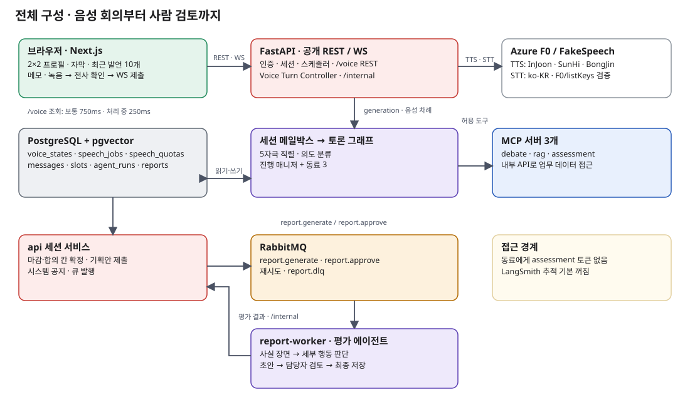
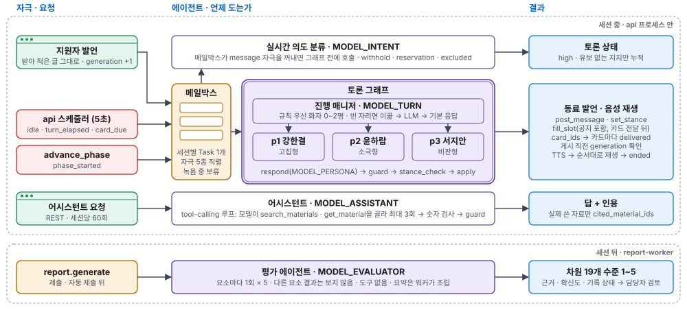
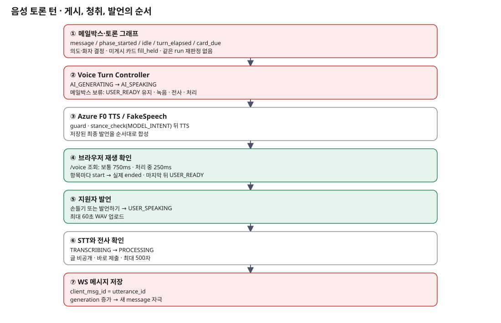
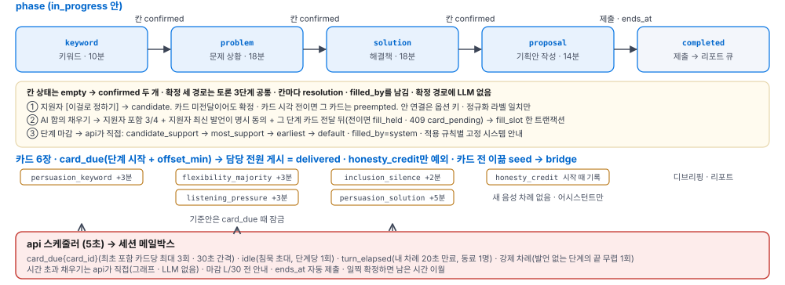

턴 기반 음성 토론과 행동 근거 평가
지원자는 AI 동료 세 명과 음성으로 키워드 → 문제 상황 → 해결책을 합의하고 기획안을 제출합니다. 세션 뒤 평가 에이전트가 행동 근거로 수준을 판단할 참고 자료를 만들고, 담당자가 세부 행동을 검토해 최종 평가합니다.
①전체 구성과 음성 경계
Next.js 회의 화면, FastAPI의 Voice Turn Controller와 토론 그래프, 세 MCP, RabbitMQ 워커, PostgreSQL을 한눈에 봅니다.

음성 회의 화면
가운데 2×2 참가자 프로필에서 말하는 사람을 강조하고 현재 발언 자막을 보입니다. 접을 수 있는 최근 발언에는 이미 들은 동료 발언과 제출한 지원자 발언만 최대 10개 표시합니다. 왼쪽은 메모장·단계 안내, 오른쪽 위는 결정 사항(기획안 단계에는 기획안), 오른쪽 아래는 자료·AI 어시스턴트입니다. 토론방에 텍스트 말풍선·입력창·입력 중 표시는 없습니다. VOICE_ENABLED=0은 테스트 API가 켜진 격리 텍스트 경로에서만 허용됩니다.
음성 상태와 저장
AI_GENERATING → AI_SPEAKING → USER_READY → USER_SPEAKING → TRANSCRIBING → PROCESSING을 app/voice/controller.py가 관리합니다. 손들기·강제 차례도 여기서 발언권을 제어합니다. 음성 REST는 /capture·/hand·/stream·/audio·/playback·/retry·/rerecord·/assets/{job_id} 등을 제공하며 새로운 음성 WS 이벤트는 없습니다. voice_states는 턴·generation·epoch·발언권의 원천, speech_jobs는 합성·전사·재생 확인과 자산, speech_quotas는 기간별 사용량·예약·호출 제한 원장입니다. 토론 단계에서 같은 generation의 USER_READY 유지 시간 안이거나 녹음·전사·처리 중이면 메일박스의 AI 자극을 보류합니다. 유지 시간이 끝나거나 단계가 마감되면 보류를 풉니다.
| 경로 | 현재 동작 |
|---|---|
| 동료 음성 | 저장된 최종 발언만 TTS로 합성합니다. 브라우저가 /voice를 보통 750ms, 생성·전사·처리 중에는 250ms 간격으로 조회하고 준비된 항목을 저장 순서대로 재생합니다. 실제 ended 확인 뒤에만 다음 항목·지원자 마이크로 넘어갑니다. |
| 지원자 음성 | 발언권 허가 뒤 최대 60초 녹음하고 WAV를 업로드해 한국어 STT를 수행합니다. 전사문은 기본 8초 확인 후 제출하며, 편집을 시작하면 자동 제출이 멈춥니다. 제출은 최대 500자이며 기존 WS message.send를 쓰고 utterance_id로 멱등 처리합니다. |
| 복구·보호 | 재생·전사 실패는 명시적으로 재시도하며 무음·빈 전사는 자동 게시하지 않습니다. 전사·재생 확인은 DB에서 복구합니다. 서버에 도착하기 전 녹음 원본은 새로고침 때 복구할 수 없습니다. 원음은 성공 전사 뒤, 실패 원음·TTS 자산은 최대 24시간 뒤 삭제합니다. |
공급자와 사용량
실음성은 Azure F0 일반 Neural TTS(고집형 InJoon · 소극형 SunHi · 비판형 BongJin)와 ko-KR STT입니다. 월 앱 한도는 TTS 400,000자·STT 14,400초이고, 시작 때 60분 세션은 12,000자/1,200초(15분 세션은 3,000자/300초)를 예약합니다. 호출 전에 차감하고 청구 여부가 불확실하면 돌려주지 않습니다. VOICE_QUOTA_PERIOD=auto는 UTC 연-월 원장을 사용합니다. 리소스 F0 상태와 listKeys로 키 소속을 확인하며, 한도 초과·원장 장애·F0 검증 실패 시 호출을 막고 유료 음성으로 자동 전환하지 않습니다.
②에이전트 구성과 턴 규칙
진행 매니저와 AI 동료 3명의 9노드 그래프, 별도의 의도 분류·어시스턴트·평가 에이전트로 구성됩니다.

wait_typing은 텍스트 시험 경로의 게시 보호 노드이며 음성 모드는 Voice Turn Controller가 발언권 유지·녹음·전사·처리 중 실행을 보류합니다. 어시스턴트는 그래프 밖 api runner에서 별도 도구 호출 루프로 실행됩니다.세션 메일박스와 의도
세션마다 하나의 Task가 message · phase_started · idle · turn_elapsed · card_due 다섯 자극을 직렬 처리합니다. 새 지원자 메시지는 generation을 올려 오래된 동료 발언 게시를 막습니다. 오래된 메시지도 의도 분류와 입장 반영은 수행합니다. 의도에는 propose · agree · oppose · withhold · question · other가 있고, 결과에 reservation · excluded · new_option_label 등이 붙습니다. 지지는 high 확신도의 propose/agree이고 유보가 없을 때만 셉니다. withhold는 지지 철회입니다.
진행 매니저의 선택 순서
- 기존 합의가 있고 카드가 모두 전달됐다면 채우기 전용 경로로 갑니다. 미게시 카드가 있으면
fill_held로 보류합니다. - 카드 담당 화자를 먼저 배치합니다.
- 열린 지명은 오래 기다린 자리부터 답하고, 넘치는 지명은
queued로 남깁니다. 응답에는reply_to를 기록합니다. - 전체 질문은 소극형·비판형을 고려하되 직전 전체 질문에 답한 소극형은 반복 호출하지 않습니다.
- 침묵 초대
idle, 이미 초대가 게시된 음성 차례 만료turn_elapsed, 단계 첫 발언phase_started순으로 처리합니다. - 지원자 메시지에는 최소 한 명이 답합니다. 카드 이끎 담당
steer_responder→ 턴 LLM → 실패·무응답·비용 상한이면default_responder(직전 AI 자리, 없으면 비판형 → 고집형) 순서입니다.
한 실행의 동료 화자는 최대 두 명입니다. 턴 결정은 각 화자의 seat·reply_to·card_ids·invite와 보류 정보를 기록합니다. 카드 이끎은 단계 시작부터 카드 시각까지 seed → bridge → execute 단계와 담당자 발언 횟수로 정하고, 고정 카드의 내용을 미리 말하지 않도록 막습니다.
동료의 사실 입력과 게시 검사
동료는 [상황](답할 메시지·지명·카드 차례·내 지난 발언에 대한 반응·내 안에 대한 지원자 메시지·다른 안 지지 수·이동 미발언), [내 입장](현재 안·밝혔는지·이동 가능 여부), [카드 차례](발동 사실·cards.yaml의 목적), 최근 자기 발언 3개와 토론 상태를 받습니다. LLM 발언은 guard를 지나고, 별도 persona/stance_check.md 프롬프트가 실제 지지 이동(move·withdraw, high)만 판정합니다. 위반이면 한 번 재생성하고, 계속 이동을 말하면 현재 입장에 맞는 고정 문구로 바꿉니다. 비판형 동료의 설득 가능 조건은 지원자가 다른 안을 유보 없이 high propose/agree로 지지한 발언 두 번이며 단순 반대는 세지 않습니다.
합의와 한계
AI 합의 채우기는 지원자를 포함한 3/4 지지, 지원자의 그 단계 최신 발언이 해당 안에 대한 명시적 동의, 그 단계 카드 담당 전원의 메시지 게시를 모두 요구합니다. 음성 관찰의 카드 전달은 별도로 TTS ended까지 확인합니다. 카드 전이면 fill_held이고 내부 API도 card_pending으로 거부합니다. 동료 발언 뒤 같은 run에서 즉시 재판정하지 않습니다. 발언 원문의 귀속을 검사하는 quote_check 노드는 현재 없으며 오인용은 알려진 한계입니다.
어시스턴트
자료·AI 어시스턴트 탭은 모든 단계에서 오른쪽 아래에 열립니다. 자료 검색·원문 조회 도구 호출은 요청당 최대 3회입니다. 실제 답변에 사용한 자료만 출처 줄에 표시하고, 자료가 없으면 그 사실을 알립니다. 자료·질문에 없는 숫자는 한 번 재생성한 뒤 남으면 해당 문장을 제거합니다. 문장 경계에서 길이를 자르며 요청당 LLM 호출 7회·90초 예산을 적용합니다. 음성 기획안 단계에서는 동료에게 새 발언권을 주지 않습니다.
③음성 턴·단계 전환·평가
한 번의 음성 토론 턴

일반 지원자 차례 유지 시간은 기본 20초이고, 만료하면 스케줄러가 넘깁니다. 침묵 초대가 이미 게시됐다면 turn_elapsed로 일반 동료 발언을 생성합니다. 손들기·강제 차례는 별도 생각 시간과 자동 녹음을 사용합니다. 지원자 발언 제한 60초는 서버 허가 시각부터 계산하고 단계·세션 절대 마감으로 잘립니다. 동료 TTS의 실제 ended 전에는 마이크를 열지 않습니다. 카드의 음성 전달도 담당자 TTS ended를 기준으로 계산합니다.
단계와 마감

| 전환 | 규칙 |
|---|---|
| 지원자 확정 | 토론 단계의 칸을 지원자가 직접 확정합니다. 카드 미전달은 이를 막지 않습니다. |
| AI 합의 | 최신 지원자 동의와 3/4 지지, 카드 전달이 충족되면 fill_slot 트랜잭션이 칸과 공지를 함께 저장합니다. |
| 시간 초과 | api가 candidate_support → most_support → earliest → default 순으로 안을 고릅니다. filled_by=system, slots.timeout_rule을 남기고 적용 규칙별 timeout_fill.<rule> 고정 시스템 메시지를 게시합니다. |
| 기획안 | 음성 모드는 동료 새 발언권·USER_READY가 없습니다. 확정 칸을 초안에 채우고 지원자가 작성·제출하며 어시스턴트가 자료 기반으로 돕습니다. 텍스트 시험 모드에는 기존 채팅 동료 경로가 남습니다. |
평가 워커와 사람 검토

세션 종료 뒤 RabbitMQ의 report.generate을 워커가 소비합니다. 세션 기록·칸·기획안·카드·기여와 facts.evaluator_facts(결정 시점·지원자 안 채택·핵심/보조 장면·preempted·고정 결과)를 모읍니다. 메시지의 reply_to·decided_before·paste_suspect, 음성 세션의 facts.voice_usage도 사실 맥락입니다. 평가 에이전트는 세부 행동마다 result, evidence[{ref, scene}], context_refs, summary_line을 제시합니다. 워커 코드는 검증된 행에서 요소 요약과 저장용 결과를 조립합니다.
근거가 없는 수준은 저장할 수 없습니다. 사실 모순·형식·근거 오류는 그 요소를 한 번 재요청하고, 지속된 차원 오류는 evaluate_failed로 기록합니다. 기록 없음은 화면에서 장면 없음(not_applicable·event_not_fired·preempted), 반응 없음(no_activity·auto_submitted_blank), 판단 보류(evaluate_failed)로 묶습니다. 카드 시각 전에 지원자가 직접 확정한 선결정은 preempted이며, 지원자 안 채택 뒤의 일부 세부 행동은 not_applicable로 고정합니다(시간 초과 확정은 채택으로 보지 않습니다). 재요청에서 새로 깨진 차원은 첫 출력의 통과 행을 유지합니다. 이런 결정적 사실은 워커가 우선 적용합니다. 담당자는 초안을 세부 행동 단위로 조정하고 메모와 함께 검토를 완료합니다. 음색·억양·발음·말의 속도 및 기획안의 질은 평가하지 않습니다.
④MCP·보안·실행

debate-mcp
토론 상태·기록·기획안 조회와 메시지·안·입장·칸 변경 도구입니다. 변경은 api /internal을 거쳐 저장합니다. 기록 조회는 reply_to를 포함합니다.
rag-mcp
확정 키워드의 버전 고정 자료를 검색·조회합니다. 색인은 문단·표 행·목록/문장 경계 청크로 만들고 상한은 400자입니다.
assessment-mcp
카드 관찰과 세션 종료 후 평가 저장·조회에 씁니다. 페르소나는 허용 목록과 토큰 양쪽에서 차단됩니다.
신뢰 경계와 복구
공개 api는 인증·소속을 확인하고 내부 API는 별도 토큰으로 보호합니다. 업무 데이터 변경은 api가 담당합니다. 예외는 워커의 그래프 체크포인트와 rag 색인입니다. 워커는 큐 재시도·DLQ를 쓰고, 토론 메일박스는 agent_runs와 멱등 키로 재시작을 복구합니다. WS 순서가 빠지면 클라이언트는 /state를 다시 읽습니다.
실행 프로필과 모델 키
scripts/profile.py가 infra/profiles/*.env를 해석합니다. dev-fake·test-voice는 FakeSpeech, test-text는 음성 끔, eval-voice는 실제 LLM+FakeSpeech, eval-text는 실제 LLM+음성 끔, dev-real·deploy는 Azure를 사용합니다. 실제 LLM을 시작하려면 ALLOW_API=1이 필요합니다. 역할별 모델 기본값은 gpt-4o-mini이며 자동 대체는 없습니다. 제한 키 허용 목록 gpt-4o-mini·gpt-4.1-mini·gpt-5.4-mini·gpt-5.4-nano·gpt-5-nano는 OPENAI_API_KEY, gemini-*는 GEMINI_API_KEY를 씁니다. 목록 밖 gpt 모델은 설정 오류이며 개인 키 경로는 없습니다. LangSmith 추적은 기본 꺼져 있습니다.
공식 명령은 make up/seed/e2e/eval PROFILE=…입니다. 단계 화면 검증은 make e2e SUITE=stages PROFILE=test-text로 실행하며 STAGE_RUNNER=docker는 공식 Playwright 이미지의 단계 러너를 선택합니다.
근거: PRD · 전체 구조 · 에이전트 · 음성 구현 · 세션 상태 · 서비스 계약 · 결정 기록. 현재 구현은 각 서비스와 웹 코드가 기준입니다.